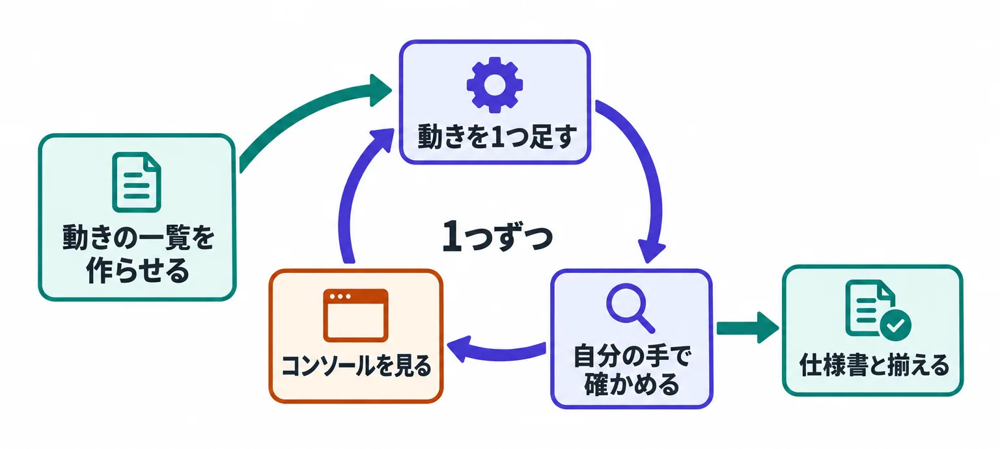
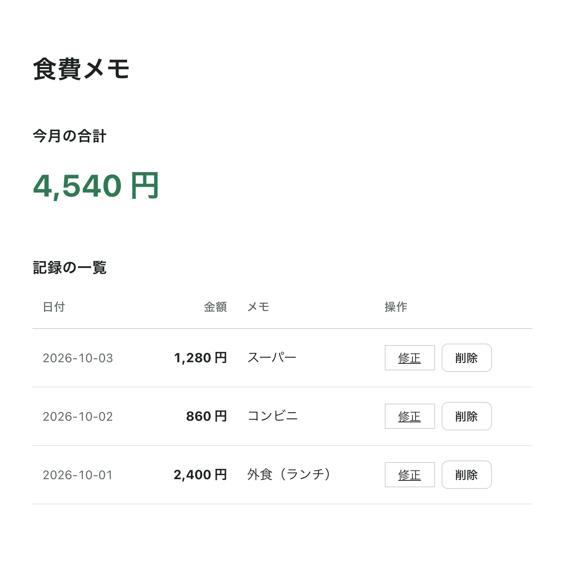
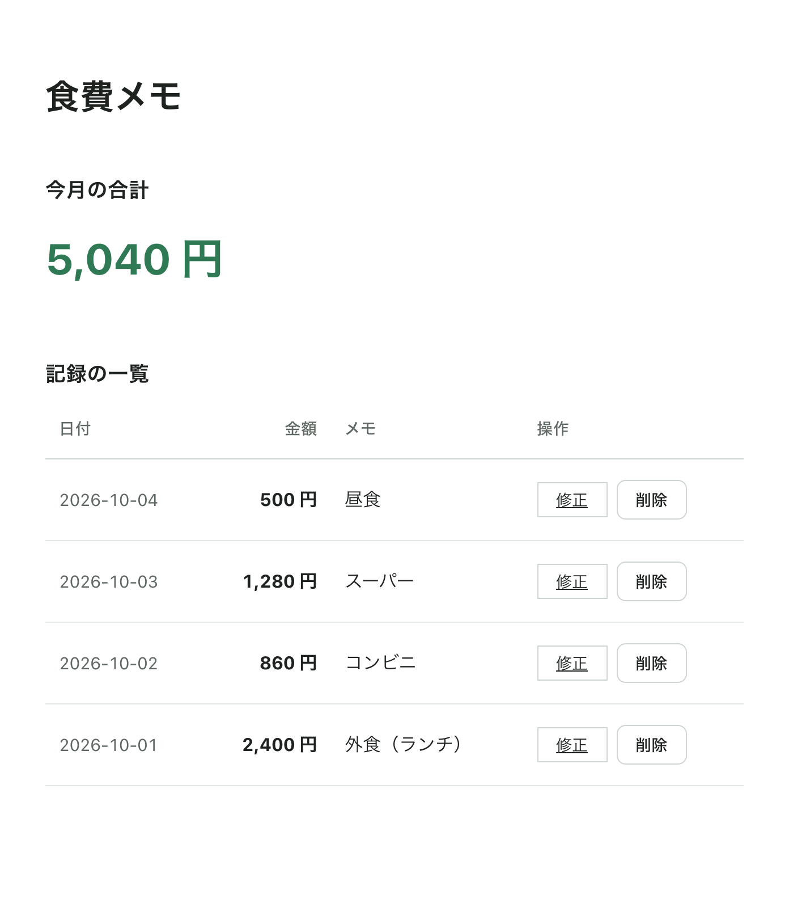
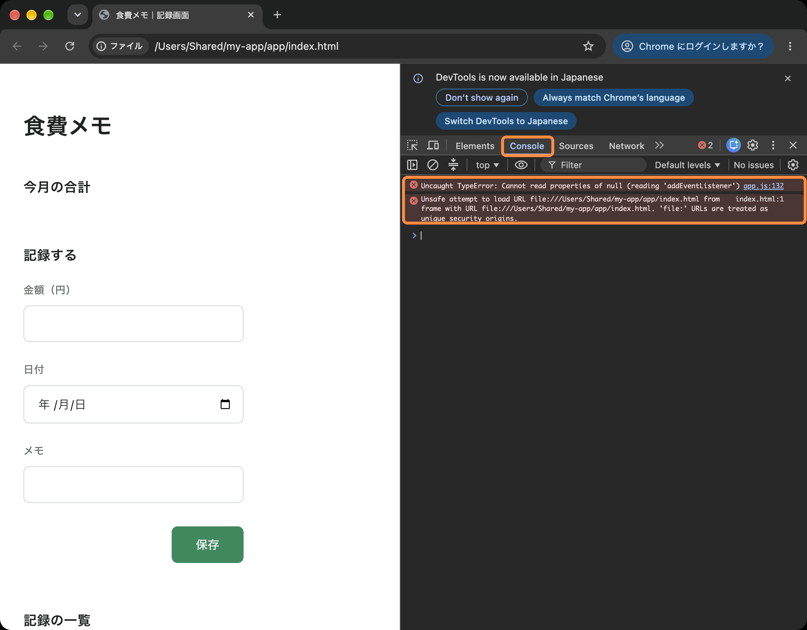
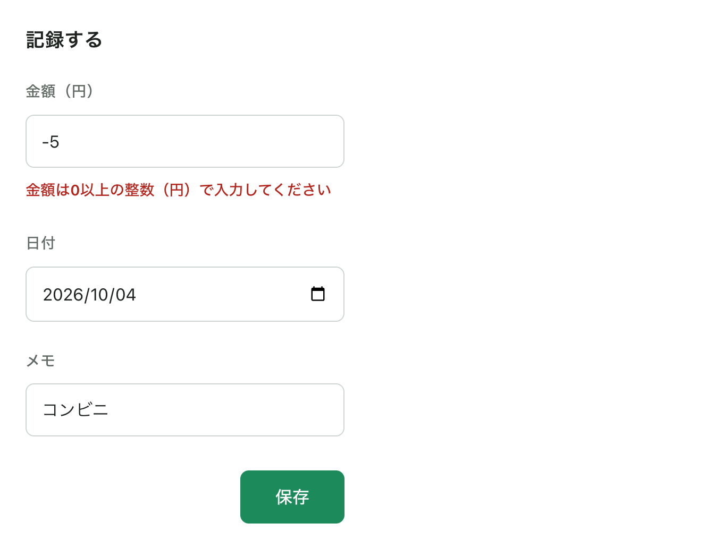
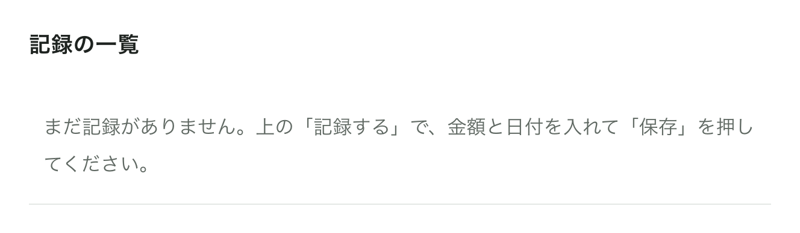
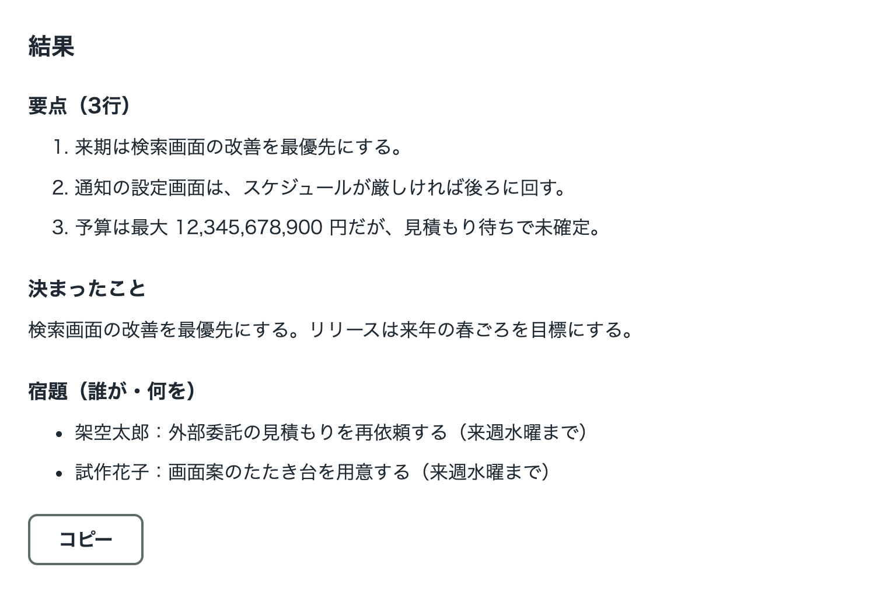
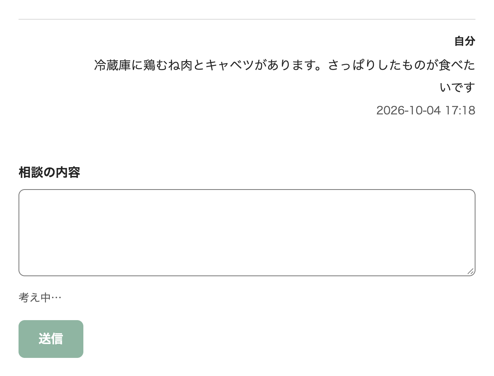
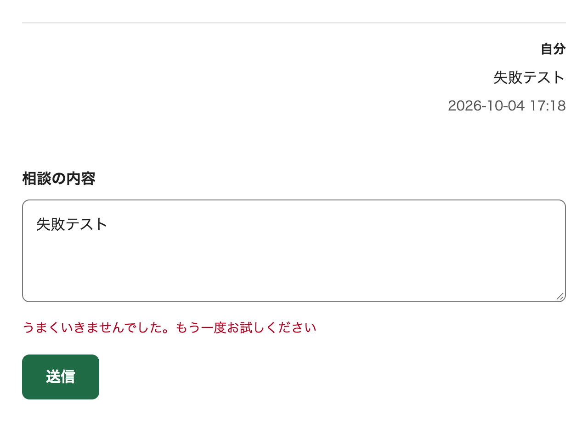

動きを作る ― よく使う操作から1つずつ

- 決める第1〜2回 オリエンテーション・要件定義
- 作る第3〜6回 モック → 動き → API 連携 → テスト
- 仕上げる第7回 デバッグと卒業制作
- 元に戻せる控えを取り、動きの一覧を作る
- 今回作る動きを1つ決め、AIに実装を頼む
- 入力して結果を確かめ、一覧に記録する
- docs/actions.md に今回作る動きと、あとに回す動きがある
- よく使う操作が、自分の選んだ環境で1回動く
- 成功・入力の間違い・失敗時を試し、OK／NG／未確認を残してある
まず「自分の制作物で進める」を読み、上の3項目で完成を確かめます。Webの操作例は、同じ構成で作るときに参照してください。画面やファイルの名前は、仕様書で決めたものを使います。
my-app）の中に、仕様書 docs/spec.md と、モック（見た目だけを作った画面。app/ の中の HTML と style.css）がある状態から始めます（作る順番 docs/tasks.md は、この回の指示①〜③では Claude Code に読ませません）。 Claude デスクトップアプリでそのフォルダを開き、Claude Code に指示を出します。Claude Code は無料プランでは使えないため、Claude の有料プランのご契約が必要です。プランの種類と料金は変わることがあるので、最新は Claude の公式ページでご確認ください。 間に合わなかった方は、LIVE講義では講師の画面で流れを見て、あとからご自身のPCで同じ手順を追ってください。自分の制作物で進める

入力から結果までを1つ動かす
この回は、試作品にいちばんよく使う動きを足します。Webでは画面のボタン、デスクトップではファイルを選ぶ操作など、動かす場所に合わせて考えます。画面のないツールなら、見本の入力を処理し、結果を表示するところから始めます。
1. 操作の一覧と、今回作る範囲を決める
作業前に、いま動くファイルの控えを取ります。保存先が分からなければ、Claude Codeに「控えを取る対象と戻し方を教えて。まだ変更しないで」と聞き、場所を確認します。
指示の型・テンプレートdocs/spec.md と今の試作品を読み、docs/actions.md に操作の一覧を作ってください。 列：番号／入力・操作／期待する結果／自分で試す手順／状態／確認した結果。 状態は「今回作る」「あとで」に分け、最初は1つだけを作る予定にしてください。 選んだ技術と動かす場所は変えません。本物のAIはまだ呼ばず、仮の返事を使います。 元のファイルや実データは上書きしません。ファイル出力が必要なら、見本用の別フォルダだけにします。 今回の範囲と、あとでにする理由を先に示し、確認を待ってください。
なぜ一覧にするか：作ったことと、自分で動かして確かめたことを分けて残せるためです。「あとで」には、本物のAIへの接続や、本番の保存先への接続などを置きます。
2. 1つ作り、同じ入力で確かめる
指示の型・テンプレートdocs/actions.md の（番号）の操作を作ってください。 変えるファイルと内容を日本語で短く示し、私が確認してから作ってください。 仕様書で選んだ構成を使い、見た目や関係ない操作は変えないでください。 実データと本物のAIは使いません。終わったら、私が試す手順を教えてください。 完成条件は、その行の「期待する結果」と一致することです。
| 例 | 入力と操作 | 確かめる結果 |
|---|---|---|
| 支出を記録するWebアプリ | 500円を入力して登録 | 一覧に1行増える |
| メモを要約するデスクトップツール | 架空のメモを選んで実行 | 仮の要点が出る。元のメモは変わらない |
| ファイルを変換するツール | 見本ファイルを1つ渡す | 別の出力先に見本どおりの内容ができる |
空の入力や未選択でも試します。分からない表示のまま止まらず、次にすることが案内されればよい状態です。動かなければ、したこと・起きたこと・期待した結果と、エラーの文を渡して、原因を先に説明させます。コードをすべて読んで正しさを判断する必要はありません。
結果を docs/actions.md にOK／NGで残します。NGを直して同じ操作を試してから、次の1つへ進みます。最後に、前から動いていた操作も試します。
完成の確認：中心となる操作が1つ動く／自分で試した結果が残っている／まだ作っていないものが分かる。下のWeb例では再読み込みで記録が消えて正解です。ファイルを出力するツールでは、別の見本用フォルダに結果が残って構いません。
Webの例：このあとの操作の地図
この回は、動きの一覧を先に出させてから、「1つ足す → 自分の手で確かめる → 動かなければコンソールを見る」を動きの数だけ繰り返します。


全体図を画像で開く ↗Webの例｜動きとは

この回でやることは3つです。
- 画面に付ける「動き」の一覧を Claude Code に作らせる
- いちばんよく使う動きを1つ足させて、自分の手で確かめる
- 残りの動きを1行ずつ足していく
動きを付けるのは、見た目だけの画面（モック）の上です。この回で作るのは、ブラウザの中だけで動く部分で、データを残す処理・画面をまたいだデータの受け渡し・サーバー・本物の AI は作りません。
動き＝ボタンを押す・文字を入れるといった操作を受け取って、画面の中身を書き換える仕組みです。ブラウザの中で動く JavaScript というプログラムで作ります。モックは、ボタンを押しても何も起きない画面でした。この回で、押したら一覧に1行増える、入力が足りなければ理由が出る、といった動きを足します。
- 動き
- 操作（押す・入れる）を受け取って、画面の中身を書き換える仕組み。この回で足すものです。
- JavaScript
- ブラウザの中で動くプログラム。HTML（何を置くか）と CSS（どう見せるか）に対して、「押されたら何をするか」を書きます。ファイル名の最後が
.jsになります。 - 画面側
- ブラウザの中で動く部分。HTML・CSS・JavaScript でできています。フロントエンドとも呼びます。
- 裏側
- 利用者から見えない場所で動く部分。データを残す処理や、AI のサービスを呼ぶ処理などです。この回では作りません。
- サーバー
- 利用者から見えない場所で動き、画面からの求めに応じてデータを返したり残したりするプログラム。この回では作りません。
- モック
- 見た目だけを作った画面。ボタンを押しても何も起きません。
1-1. なぜ見た目の次に動きを足すのか
できた画面で操作の結果を確認できるため、次に動きを足します。まだ通信を加えず、画面側の処理に絞って確かめます。本物のAIを呼ばないので、表示の確認にAPI利用料はかかりません。

第4回は、ブラウザの中で動かす
- 操作
500円を入れて「保存」を押す
- JavaScriptが処理
入力を確認し、画面内のデータを更新
- 画面を更新
一覧に1行追加。合計が500円増える
- 再読み込み
見本データだけの最初の状態に戻る
この回は保存先・サーバー・本物のAIをまだ作らない。
図解を画像で開く ↗1-2. この回で足すもの・足さないもの
- 押したときの画面の変化（一覧に1行増える・合計が変わる・結果の欄に文章が出る・やり取りが増える・消す前の確認）
- 入力のチェック（空・数字でない・範囲の外）
- 「1件も無いとき」の案内
- 「処理中」「失敗したとき」の表示（AI を使うアプリ）
- AI に考えてもらう部分は、仮の文章を返す1か所（
app/ai.js）にまとめる
- データを残す（再読み込みしても、ブラウザを閉じても残る）
- 画面をまたいだデータの受け渡し（修正画面に、選んだ記録の中身を出す など）
- サーバー
- 本物の AI の呼び出し（API キーや料金の準備が要る）
1-3. なぜデータを残す処理をまだ作らないのか
- 残し方は、置き場で変わります。ブラウザの中・自分の PC のファイル・インターネット上のデータベースなど、置き場によって作り方も、消える条件も違います。置き場を決める前に作ると、決めたあとに作り直すことになります
- ダブルクリックで開いた画面では、ブラウザの中にデータを残す動きがブラウザによって違います。画面のファイルを直接開いた状態（アドレスが
file://で始まる状態）でブラウザの中にデータを残す仕組みは、決まりが定められておらず、2026年10月4日に確かめたときも、Chrome と、Safari と同じ表示の仕組みのブラウザでは画面どうしで同じデータが見え、Firefox では画面ごとに別々になりました。ブラウザの更新で変わることもあります。データを残すのは、アプリをサーバーから開く形にしてからにします - 画面をまたいでデータを渡すのも、データを残す仕組みが前提になります。画面1から画面2へ移ると、ブラウザは画面2の HTML を読み込み直し、画面1の中に持っていたデータは消えます。修正画面に選んだ記録の中身を出すには、データをどこかに残しておく必要があります
だから、この回の動きは「再読み込みすると最初の状態に戻る」のが正しい状態です。消えるのは不具合ではありません。
- 再読み込み
- ブラウザに、いま開いている画面のファイルを読み直させること。Mac は ⌘R、Windows は F5 です。動きの中で持っていたデータは、再読み込みすると最初の状態に戻ります。
- file://
- ブラウザのアドレスが
file://で始まるのは、自分の PC の中のファイルを直接開いている状態です。ダブルクリックで HTML を開くとこの形になります。ブラウザによっては「ファイル」と表示されます。 - API キー
- AI のサービスを呼び出すときに、誰が使っているかを示す秘密の文字列。使った分の料金は、このキーを発行した人に請求されます。
1-4. 自分のアプリの型で、読み替えるところ
このページの例は、記録型の「食費メモ」（画面2枚・一覧あり）です。変換型・相談型のアプリは、次のように読み替えてください。
| 読み替えるところ | 記録型（入れて、ためて、見返す）。このページの例「食費メモ」 | 変換型（入れたものを別の形にして返す） | 相談型（質問して、答えをもらう） |
|---|---|---|---|
| いちばんよく使う動き | 金額・日付・メモを入れて「保存」→ 一覧のいちばん上に1行増え、合計が変わる | 文章を入れて「変換」→ 少し待って、結果の欄に仮の文章が出る | 入力して「送信」→ 自分の発言が増え、少し待って AI の仮の返事が増える |
| この回で作れるもの | 入力のチェック／削除（確認してから消す）／1件も無いときの案内 | 入力のチェック／処理中／失敗したとき／結果のコピー | 入力のチェック／処理中／失敗したとき／やり取りを空にする（確認してから） |
| 「あとで」に回すもの | 修正画面に選んだ記録を出す／修正の保存／閉じても残る | 履歴を残す・見返す／本物の AI で変換する | 閉じても残る／本物の AI の返事 |
app/ai.js | 作らない（食費メモには AI を使う動きが無いため。AI の機能がある記録型は、その行を作るときに作る） | 作る（仮の文章を返す） | 作る（仮の返事を返す） |
なぜ：指示③は行の数だけ同じ型を繰り返すので、人によって行の数も、かかる手間も違います。
Webの例｜準備：権限モードを「手動」にして、app の控えを取る

仕様書 docs/spec.md とモック app/ が入っているアプリのフォルダ（このページでは my-app。名前はご自身で付けたもの）を、Claude デスクトップアプリで開きます。
2-1. フォルダを開いて、権限モードを「手動」にする
Claude デスクトップアプリで
</>（Claude Code。アプリの版によっては「コード」（Code）タブ）→「＋ 新規」を押すなぜ：前の会話と混ざりません。モックを作ったときの会話には「JavaScript は使わない」という条件が残っていて、新しい指示とぶつかります。
画面の下のフォルダ名のボタン →「フォルダを開く…」→
my-appを選んで「開く」入力欄の近くに「ローカル」と
my-appが出ていることを見ます。
なぜ：選んだフォルダだけが作業の対象になります。「ローカル」は、この PC の中で動かす設定です。入力欄の下のモード名を押して「手動」を選ぶ
なぜ：この回は JavaScript のファイルを新しく作り、HTML も書き換えます。「手動」なら、どのファイルに何を書くかを確認画面で見てから許可できます。
新しいセッションは「自動」や「編集を受け入れる」で始まることがあるので、開くたびに見ます。
確認画面では、毎回「一度だけ許可」を押します。「常に許可」は選びません。
なぜ：一度選ぶと、以後その種類の操作は確認なしで進み、頼んでいない style.css の書き換えやファイルの追加に気づけなくなります。確認画面が何回も出ますが、それで正しい状態です。
- 権限モード
- ファイルの書き換えやコマンドの実行の前に、確認を求めるかどうかの設定。この回は「手動」にします。
- コマンド
- PC に文字で出す命令。
- セッション
- Claude Code との1つの会話のまとまり。「＋ 新規」で新しく始めます。
2-2. app の控えを取る
Finder（Windows はエクスプローラー）で my-app の中の app フォルダを複製し、名前を app-mock に変えます。
- Mac：
appを右クリック →「複製」→ できた「app のコピー」を右クリック →「名前を変更」→app-mock - Windows：
appを選んで Ctrl+C → Ctrl+V → できた「app - コピー」を右クリック →「名前の変更」→app-mock
なぜ控えを取るのか：動きを足すと、HTML に読み込みの1行や要素の名前が足され、一覧の仮のデータは JavaScript のほうへ移ります。思ったとおりに動かなくなったときや、見た目がいつの間にか変わったとき、app-mock の画面と見比べれば、どこが変わったかが分かります。
どうしても直らないときは、控えからやり直します。いまの app の名前を app-broken に変え、app-mock を複製して、できたコピーの名前を app にします。そのあと「docs/actions.md の状態が『作った』の行をすべて『まだ』に戻し、『確かめた結果』を空にしてください。ほかは変えないでください」と頼み、指示②からやり直します。
なぜ：一覧を戻さないと、指示③は「作った」の行を飛ばします。app の中身はモックに戻っているので、その行の動きは作られないままになります。
なぜ Claude Code ではなく自分で複製するのか：控えは「AI が手を入れる前の状態」を残すためのものです。複製も頼むと、その作業の確認画面が増え、どれが控えかを自分で見ていないことになります。
docs/tasks.md（作る順番）は、この回の指示①〜③では Claude Code に読ませません（最後の見直しで印を付けるときだけ読ませます）。docs/tasks.md には、データを残す処理やサーバーまで含めた順番が書いてあります。読ませると、この回では作らないと決めたものまで作り始めます。この回の作る順番は、次の指示①で作る docs/actions.md にまとめます。Webの例｜指示①：動きの一覧を作らせる

いきなり動きを作らせず、どの画面で、何をすると、何が起きるかの一覧を先に作らせます。次の型をそのまま入力欄に貼って送ります。書き換える箇所はありません。
指示①（動きの一覧を作らせる）― そのまま貼るdocs/spec.md と、app/ の中の画面（HTML）を読んで、画面に付ける「動き」の一覧を docs/actions.md に書いてください。まだ動きは作らないでください。 ■ 一覧の書き方 - 表にする。列は「番号｜画面｜何をすると｜何が起きるか｜確かめ方｜状態｜確かめた結果」 - 1行に1つの動き。仕様書の「やること」を、画面での操作に分けて書く。「やらないこと」に入っているものは書かない - 状態の欄は、次のどちらかにする - 「まだ」：画面の中だけで作れる動き（押すと画面が変わる・入力をチェックする・仮の文章を出す など） - 「あとで」：データを残す・画面をまたいでデータを渡す・本物の AI を呼ぶ、のどれかが要る動き（この回では作らない） - 「確かめた結果」の欄は空のままにする - 入力のチェックは画面ごとに1行にまとめ、仕様書の「扱うデータ」の必須・種類・範囲から決める - 「1件も無いとき」の表示は1行入れる。「処理中」と「失敗したとき」の表示は、AI に考えてもらう動きがあるときだけ、それぞれ1行入れる。この2行は、仮の文章で試せるので「まだ」にする（失敗は、入力に「失敗テスト」という文字があるときだけ仮の文章がわざと失敗する形で試す） - AI に考えてもらう動きは、「何が起きるか」に「AI（いまは仮の文章）」と書く - 上から作る順番に並べる。1行目は、このアプリでいちばんよく使う操作 - 行は「あとで」も含めて12行まで。収まらないときは、動きを省かずに、一覧を書く前に、収まらない理由と、仕様書の「やること」から外せそうなものを教えて、そこで止まってください - 「確かめ方」は、ブラウザでその画面を開いて、画面の操作だけで自分の手で確かめる手順を1〜2文で書く。ファイルを書き換えて確かめる手順にはしない。画面の操作だけでは試せない行（例：1件も無いとき）は、試せるようにする行（例：削除）より後ろに並べる ■ 条件 - 書き込むのは docs/actions.md だけ。ほかのファイルは読むだけで、書き換えないでください - app-mock フォルダは読まないでください
- docs/actions.md
- この回で作る「動きの一覧」のファイル。actions は「操作・動作」の意味です。
docsフォルダの中に、仕様書spec.mdと並べて置きます。 - 表
.mdのファイルの中では、|で区切った行が表を表します。テキストエディットやメモ帳で開くと、|で区切った文字のまま見えます。表の形で読みたいときは、Claude Code に「docs/actions.mdの表を、そのまま返答に出してください。ファイルは変えないでください」と頼むと、返答の中で列がそろって見えます。
3-1. 条件の1行ずつに理由があります
送ると、Claude Code は docs/spec.md と app/ の HTML を読み、docs/actions.md を作ります。確認画面で、ファイルの場所が my-app/docs/actions.md であることを見てから「一度だけ許可」を押します。
12行に収まらずに止まったときは、返答の「外せそうなもの」から作らないものを選び、「docs/spec.md の『やること』の（ ）を『やらないこと』に移してください。ほかの項目は変えないでください」と頼みます。許可したら、指示①をもう一度そのまま送ります。
なぜ：指示①は、仕様書の「やること」から一覧を作り、「やらないこと」は書きません。仕様書のほうを直してから送り直せば、外したものは一覧に入らず、仕様書と一覧も食い違いません。
3-2. 例：食費メモでできた一覧（抜き出し）
| 番号 | 画面 | 何をすると | 何が起きるか | 確かめ方 | 状態 |
|---|---|---|---|---|---|
| 1 | 記録画面 | 金額・日付を入れて「保存」を押す | 一覧に1行増え、今月の合計がその場で変わる。入力欄は空に戻る | 金額と日付を入れて「保存」を押し、一覧に1行増えて合計が変わるのを見る | まだ |
| 2 | 記録画面 | 入力が正しくないまま「保存」を押す | 金額が空・小数・マイナス、日付が空のときは保存せず、欄の近くに理由を出す。メモは空でも保存できる | 金額を空や -5、12.5 にして「保存」を押し、理由が出て一覧が増えないのを見る | まだ |
| 5 | 記録画面 | 一覧の「削除」を押す | 「削除しますか？」と確認を出す。OK なら行が消えて合計が変わる | キャンセルで行が残り、OK で行が消えるのを見る | まだ |
| 6 | 記録画面 | 記録を全部削除する | 一覧の場所に「まだ記録がありません」と出る | 全部削除して、案内が出るのを見る | まだ |
| 9 | 記録画面→修正画面 | 一覧の「修正」を押す | 修正画面に、選んだ記録の金額・日付・メモが入っている | 2行目の「修正」を押し、その行の中身が入っているのを見る | あとで |
| 11 | 記録画面 | ブラウザを閉じて開き直す | 前回までの記録が残っている | 1件保存して閉じ、開き直して残っているのを見る | あとで |
3-3. 読んで直す
一覧ができたら、docs/spec.md を横に開いて、次の5つを見ます。
仕様書の「やること」が、どれかの行に入っているか
抜けていたら、あとで作り忘れます。
仕様書の「やらないこと」が混じっていないか
混じっていたら、その行を消させます。
「あとで」の振り分けが合っているか
データを残す・画面をまたぐ・本物の AI が要るものだけが「あとで」になっているかを見ます。
1行目が、いちばんよく使う操作か
「確かめ方」が、自分で試せる文になっているか
何を入れて、何を押して、何が見えればよいかが書いてあるかを見ます。
直したいところがあれば、1回に1つずつ頼みます。例：「docs/actions.md の7行目は、仕様書の『やらないこと』に入っている並べ替えなので消してください。ほかの行は変えないでください」。
なぜ人が読んで直すのか：この一覧が、このあとの指示の順番と、動いたかどうかの判断の基準になります。AI が作ったまま進めると、仕様書に無い動きを作らせたり、作るべき動きを飛ばしたりしても気づけません。
Webの例｜指示②：いちばんよく使う動きを1つ足す

一覧の1行目の動きを作らせます。次の型をそのまま貼って送ります。書き換える箇所はありません（1行目の中身は、一覧から読み取らせます）。
指示②（いちばんよく使う動きを1つ）― そのまま貼るdocs/actions.md の1行目の動きを作ってください。 ■ 作り方 - 動きは app/app.js に書き、使う画面の HTML の </body> の直前に <script src="app.js"></script> を1行足して読み込んでください - この回は HTML をダブルクリックで開いて確かめます。そのため type="module"・import・fetch は使わないでください - データは画面の中（app.js の中）に持つだけにしてください。再読み込みすると最初の状態に戻って構いません。データを残す処理はまだ作りません - HTML に直接書いてある仮のデータ（一覧の行・やり取り・結果の文章など）は、app.js の最初に「見本のデータ」としてまとめ、画面はそこから描いてください。同じものが二重に出ないように、HTML に直接書いてある仮のデータは消してください。描いたものの見た目（タグと class）は、いまと同じにしてください - 入力欄に最初から入っている仮の値は消して、空から入力できるようにしてください - ボタンを押したときに、画面が読み込み直されたり別の画面へ移ったりしないようにしてください（仕様書で「押すと〜へ」と決めたボタンは除く） - AI に考えてもらう部分は app/ai.js の関数1つにまとめ、いまは1秒待ってから決まった文章を返すだけにしてください。AI を使わない動きなら ai.js は作りません ■ 変えてよい範囲 - 新しく作ってよいのは app/app.js と、AI を使う場合の app/ai.js だけ - HTML で変えてよいのは、読み込みの1行を足す・動きを付ける要素に id を付ける・上の「仮のデータを消す」「仮の値を消す」だけ。要素の並び・文言・ほかの属性は変えないでください - app/style.css は変えないでください - サーバーの作成・起動、パッケージの追加、設定ファイルの作成、ブラウザの起動はしないでください - 書き換える前に、変えるファイルと変える中身を短く一覧で教えてください。この範囲で作れない場合は、作り始めずに理由を教えてください ■ 終わったら - docs/actions.md の1行目の状態を「作った」にしてください - ブラウザでの確かめ方を、Finder やエクスプローラーから開く手順で教えてください 完成条件：docs/actions.md の1行目の「確かめ方」のとおりになること
- app.js
- この回で作る、画面の動きを書く JavaScript のファイル。
appフォルダの中に置きます。 - ai.js
- AI に考えてもらう部分だけをまとめるファイル。この回では、1秒待って決まった文章（仮の文章）を返すだけです。AI を使うアプリだけが作ります。
- 関数
- プログラムの中で、ひとまとまりの処理に名前を付けたもの。app.js は、ai.js の関数を名前で呼び、返ってきた文章を画面に出します。
- 読み込み
- HTML に「この JavaScript のファイルを使う」と書く1行（
<script src="app.js"></script>）。これが無いと、app.js を作っても画面は動きません。 - id
- HTML の要素に付ける名前。JavaScript は、この名前で「どの入力欄の値を読むか」「どの一覧に行を足すか」を見分けます。名前を付けても見た目は変わりません。
- タグ・class
- タグは、HTML で要素の種類を表す印（
<button>・<input>など）。class は、要素に付ける分類の名前（class="…"）です。style.css は、タグと class を目印にして色や余白を当てています。 - 見本のデータ
- モックで HTML に直接書いていた仮のデータを、app.js の中にまとめ直したもの。画面はここから描かれます。
- 仮の文章
- 本物の AI の代わりに返す、決まった文章。表示の流れを作って確かめるために使います。
- パッケージ
- ほかの人が作ったプログラムの部品。入れると
package.jsonなどのファイルが増えます。 - フォーム
- HTML の入力欄のまとまり。ボタンを押すと内容を送って画面を読み込み直す動きが、最初から付いています。
- ターミナル
- 文字で命令を打ち込む画面。この回では使いません。
4-1. 条件の1行ずつに理由があります
app/app.js に書き、<script src> で読み込むtype="module"・import・fetch は使わないtype="module" と import は、ダブルクリックで開いた画面（file://）では、ブラウザが読み込みを止めます。2026年10月4日に、Chrome と、Safari と同じ表示の仕組みを使うブラウザで確かめ、どちらも動きませんでした。fetch は、通信でデータを取りに行く機能です。この回は通信の相手（サーバー）を作らないので使いません。ダブルクリックで開いた画面から同じフォルダのファイルを fetch で読もうとしても、同じ日の確認で止められました。どれも、使われるとボタンを押しても何も起きない画面になり、原因がコードの中身ではなく開き方にあるので見つけにくくなります。あくまで、この回の開き方に合わせた条件です仕様書の「使う技術」に React などを書いてあっても、この回は app/ の HTML に app.js を足す形で作ります。
なぜ：ダブルクリックで開いて確かめるので、部品の追加や起動の手順が要る構成は使いません。
返答に「仕様書には React と書いてありますが…」と断りが付いても、それで正しい状態です。仕様書は直しません。仕様書に書いた技術は、あとで裏側を足すときに使います。指示②が「この範囲では作れない」と止まったときは、「この回は、仕様書の『使う技術』ではなく、指示の作り方で作ってください」と送ります。
- React
- 画面を部品に分けて組み立てるための JavaScript の道具の1つ。使うには部品の追加や起動の手順が要ります。この回では使いません
4-2. 確認画面で見るところ
送ると、Claude Code はまず変えるファイルの一覧を書き、それからファイルごとに確認画面を出します。
app/app.jsを作る確認：場所がmy-app/app/app.jsであること。中身の最初のほうに、見本のデータ（モックに書いていた仮のデータと同じ中身）が並んでいることapp/ai.jsを作る確認（AI を使うアプリだけ）：場所がmy-app/app/ai.jsであること。中身が、1秒待ってから決まった文章を返す関数1つであることapp/index.htmlを書き換える確認：変わる行が、<script src="app.js"></script>の1行（AI を使うアプリは、その上の<script src="ai.js"></script>と合わせて2行）・id="…"の追加・仮のデータの行の削除・入力欄のvalue="…"の削除だけであること。見出しやボタンの文字が変わっていないことdocs/actions.mdを書き換える確認：1行目の状態が「まだ」から「作った」に変わるだけであること。
なぜ：頼んだ作業です。拒否すると1行目が「まだ」のまま残り、指示③がもう一度1行目を作ります- 上のファイル以外（
style.css・package.json・server.jsなど）の確認や、頼んでいないコマンド（ブラウザを開くもの、node --checkのようにnodeで始まるものなど）の確認が出たら、「拒否」を押します。
なぜ：頼んだ範囲の外の作業です。拒否しても、頼んだファイルの変更は残ります
4-3. 例：食費メモでの返答（要点）
返答には、変えたファイルと、確かめ方が書かれます。
app/app.js（新規）：見本のデータ3件をまとめ、一覧と合計はそこから描く。「保存」を押すと、一覧の先頭に1行足して合計を変え、入力欄を空に戻すapp/index.html：一覧の仮の3行・合計の仮の文字・入力欄の仮の値を消し、idを付け、</body>の直前に読み込みの1行を足したdocs/actions.md：1行目の状態を「作った」にした- 次の動きに回したこと：金額か日付が空のときは何も起きない（エラーの表示は2行目で作る）
Webの例｜自分の手で確かめる

コードの名前を全部読み解く必要はありません。Claude Codeに「どのファイルで何を変えたか、頼んだ範囲の外を変えていないかを日本語で報告して」と頼みます。そのうえで、下の確かめ方を自分で実行し、期待した結果と比べてください。
開き方：Finder（Windows はエクスプローラー）で my-app → app → index.html をダブルクリックします。すでにブラウザで開いているときは、再読み込み（⌘R／F5）します。
なぜ：ブラウザは前に読んだファイルを表示し続けています。読み直させないと、新しく足した動きが入っていない画面のまま試すことになります。
docs/actions.md の1行目の「確かめ方」のとおりに、自分の手で試します。食費メモなら次のとおりです。
- 開いた直後、一覧に見本のデータ3件が出ていて、入力欄は空です。見た目はモックのときと同じです。合計のように見本のデータから計算して出す欄は、モックに書いてあった数字と変わることがあります（見本のデータの日付が今月でなければ、今月の合計に入らないためです）。一覧の行と、入力欄が空であることを見れば十分です
- 金額に
500、日付に今日の日付、メモに昼食を入れて「保存」を押します - 一覧のいちばん上に1行増え、今月の合計が 500 円増え、入力欄が空に戻ります
- 画面が一瞬白くなったり、別の画面へ移ったりしません
- 再読み込みすると、見本のデータ3件だけに戻ります（これで正しい状態です。データを残す処理は、この回では作りません）




5-1. 確かめた結果を一覧に残す
試したら、結果を Claude Code に伝えて docs/actions.md に書かせます。
docs/actions.md の「確かめた結果」の欄に、次のとおり書いてください。ほかの欄は変えないでください。 - 1行目：OK
うまく動かなかったときは、「1行目：NG（保存を押しても一覧が増えない）」のように、何をしたら、何が起きたかを書きます。次の節の型で直させます。
なぜ自分の手で確かめるのか：Claude Code は「作りました」と答えますが、実際の画面で押して確かめたわけではありません。確かめ方を自分の手で通して初めて、その動きができたと言えます。何を確かめるべきかを自分が持っていないと、あとで AI に確かめさせたときに、その報告が正しいかどうかを判断できません。
なぜ結果をファイルに書かせるのか：どこまで確かめたかを、覚えておかなくて済みます。あとで別の動きを足して前の動きが壊れたとき、「前は OK だった」と分かれば、壊したのは最後に足した動きだと絞り込めます。
Webの例｜動かないとき：コンソールの赤い文字を渡す

ボタンを押しても何も起きないときは、JavaScript がどこかで止まっていることが多いです。止まった理由は、ブラウザのコンソールに赤い文字で出ます。
- 開発者ツール
- ブラウザに最初から付いている、画面の中身やエラーを調べる機能。
- コンソール
- 開発者ツールの中の、JavaScript のエラーや記録が文字で出る欄。止まった理由が赤い文字で出ます。
- エラー
- プログラムが途中で止まった理由を知らせる文。英語で出ることが多いですが、読めなくて構いません。そのまま Claude Code に渡します。
6-1. コンソールの開き方
2026年10月4日時点の開き方です。メニューの名前は、更新で変わることがあります。
| ブラウザ | 開き方 |
|---|---|
| Chrome | Mac は ⌥⌘J（option＋command＋J）、Windows は Ctrl+Shift+J。開いた欄の上の「Console」を押す |
| Edge | Mac は ⌥⌘J、Windows は Ctrl+Shift+J |
| Safari | 先に「Safari」→「設定」→「詳細」→「Web デベロッパ用の機能を表示」をオンにする（1回だけ）。そのあと ⌥⌘C |


6-2. 渡し方
先に、下の型の「コピー」を押して入力欄に貼り、（ ）の中を書き換えます。次に、コンソールを開いたまま再読み込み（⌘R／F5）して同じ操作をもう一度し、赤い文字が出たところをスクリーンショットで撮ります（Mac は ⌃⇧⌘4、Windows は Windows＋Shift＋S を押して範囲を選ぶと、画像がクリップボードに入ります）。入力欄で ⌘V（Windows は Ctrl+V）を押すと画像が貼れるので、そのまま送ります。
なぜこの順番なのか：クリップボードに入るのは1つだけです。先にスクリーンショットを撮ってから型の「コピー」を押すと、画像は型の文字に置き換わって消えます。再読み込みしてから操作するのは、開いた直後に止まる不具合の赤い文字も出し直すためです。
- クリップボード
- コピーしたものを一時的に置いておく場所。入るのは最後にコピーした1つだけです
docs/actions.md の（ ）行目の動きが、うまく動きません。 - したこと：（例：金額に 500、日付に今日を入れて「保存」を押した） - 起きたこと：（例：一覧に何も増えない。画面も変わらない） - コンソール：赤い文字が出ています（スクショを添付） まず原因を教えてください。直すのは、私が「直してください」と言ってからにしてください。
原因の説明を読んだら、「直してください。変えるのは、いま説明してくれた原因の箇所だけにしてください。HTML の要素の並び・文言と style.css は変えないでください」と送ります。
なぜ：読み込みの1行が無い・ファイル名が違う・id の付け忘れのように、HTML を直さないと直らない原因もあります。
直ったら、再読み込みして、もう一度「確かめ方」を通します。
なぜ「したこと・起きたこと・コンソール」の3つを渡すのか：「動きません」だけでは、AI はどの操作のことか分からず、推測で別の場所を直します。何を押して、何が見えたかと、止まった理由の文があれば、原因を1つに絞れます。
なぜ先に原因を説明させるのか：すぐに直させると、AI は原因が分からないまま、それらしい場所をまとめて書き換えることがあります。直ったように見えても、何が悪かったのかが分からず、同じことが起きたときにまた一からになります。説明を読んで、自分のした操作の話になっているかを確かめてから直させます。
6-3. 赤い文字が出ていないとき
JavaScript が止まったのではなく、別の理由で動いていないことが多いです。
- HTML に読み込みの1行（
<script src="app.js"></script>）が無い、またはファイル名が違う - 再読み込みをしていない（前の画面のまま）
- 別のフォルダの HTML を開いている（
app-mockの中のindex.htmlを開いていないか、アドレス欄で見ます）
このときも、「したこと・起きたこと・赤い文字は出ていない」の3つを渡して、まず原因を聞きます。
Webの例｜指示③：残りの動きを1行ずつ足す

1行目が動いたら、残りの「まだ」の行を、上から1行ずつ足していきます。毎回、次の型をそのまま貼って送ります。書き換える箇所はありません（次にどの行を作るかは、一覧の「状態」から読み取らせます）。
指示③（残りの動きを1行ずつ）― 毎回そのまま貼るdocs/actions.md で、状態が「まだ」の行のうち、いちばん上の1行の動きを作ってください。ほかの行の動きは変えないでください。 ■ 作り方 - 動きは app/app.js に足してください。AI に考えてもらう部分は app/ai.js の関数を使ってください（まだ無ければ、関数1つの app/ai.js を作り、1秒待ってから決まった文章を返すだけにしてください。読み込みは app.js の行の上に足してください） - type="module"・import・fetch は使わないでください。データは画面の中に持つだけにしてください（残す処理は作らない） - サーバーの作成・起動、パッケージの追加、設定ファイルの作成、ブラウザの起動はしないでください ■ 変えてよい範囲 - HTML の要素の並び・文言は変えないでください。新しい表示（エラーの文・案内の文・処理中の表示）が要るときだけ、HTML に要素を足して構いません。足す前に、どの画面のどこに足すかを教えてください - 新しい表示に見た目が要るときだけ、app/style.css のいちばん最後に指定を足して構いません。今ある指定は変えないでください。色と余白は、いまの画面に合わせてください ■ 行の種類ごとの決まり（当てはまる行のときだけ） - 入力のチェック：だめなときは保存・送信・変換をせず、欄の近くに理由を出す。入力した内容は消さない。チェックするのは docs/spec.md の「扱うデータ」に書いてある必須・種類・範囲だけ - 1件も無いとき：一覧などの場所に、次に何をすればよいかが分かる案内の文を出す - 処理中：終わるまでボタンを押せなくし、処理中だと分かる文（例：「考え中…」）を出す - 失敗したとき：「うまくいきませんでした。もう一度お試しください」と出し、入力した内容は消さない。試せるように、ai.js は入力に「失敗テスト」という文字が入っているときだけ失敗するようにする（本物の AI につなぐまでの仮の仕組み） ■ 終わったら - その行の状態を「作った」にして、ブラウザでの確かめ方を教えてください 完成条件：その行の「確かめ方」のとおりになること。前に作った動きも、これまでどおり動くこと
7-1. 1行足すたびにすること

1行作ったら、前の動きも確かめる
- 選ぶ
actions.md の「まだ」の先頭1行
- 作る
変更するファイルと中身を確認して許可
- 試す
「確かめ方」を自分の手で操作
- 結果を残す
OK／NGと実際の結果を記録
- 前の動きも押す
壊れていなければ、次の1行へ
「作った」と「確かめた結果」は別々に記録する。
図解を画像で開く ↗毎回、再読み込みしてから試します。結果は「自分の手で確かめる」の型で docs/actions.md に残します。前の動きも確かめるのは、追加時に共通部分が書き換わることがあるためです。NGなら次の行へ進まず直します。
なぜ1回の指示で1行なのか：まとめて頼むと、確認画面の中身が長くなって読み切れず、動かないときに、どの行の作業が原因か分かりません。1行ずつなら、うまくいかなかったときに「さっきの1行を作る前に戻して」と頼むだけで済みます。
なぜ毎回同じ型を貼るのか：型の中に、変えてよい範囲と、この回で作らないものが全部入っています。2回目以降に条件を省くと、AI はその回の指示だけを見て、データを残す処理や見た目の変更を始めることがあります。
7-2. 行の種類ごとの決まりの理由

成功したとき以外も、画面に伝える
欄の近くに理由を表示。入力は残す
次にする操作を案内する
処理中と表示し、ボタンの連打を防ぐ
失敗を表示し、入力を残して再試行できる
処理中・失敗は、仮の応答でも確かめられる。
図解を画像で開く ↗- 入力チェックは仕様書の必須・種類・範囲だけにします。食費メモは「金額は0以上の整数、メモは任意」。独自の制約を足すと、決めていない理由で保存できなくなります。
- 不正な入力では保存・送信しません。理由は欄の近くに出し、入力は残します。消すと打ち直しになるためです。
- 処理中・失敗の表示は、AIを使う動きで用意します。無反応だと連打や待ち続けにつながります。
ai.jsは「失敗テスト」を含む入力で失敗させて表示を確認し、本物のAIにつなぐときにこの仮の仕組みを外します。
7-3. 自分のアプリの型での見え方
記録型：入力のチェックでは、理由が金額欄の下に赤い文字で出て、一覧は増えません。全部削除すると、一覧の場所に「まだ記録がありません」の案内が出ます。




変換型・相談型：「変換」「送信」を押すと、ボタンが押せなくなって処理中の文（「考え中…」「まとめています…」など）が出て、1秒後に仮の文章が出ます。入力に「失敗テスト」を入れて押すと、失敗の文が出て、入力は残ります。






Webの例｜見直す：全部押す・見た目を見比べる・仕様書と揃える

「まだ」の行が無くなったら、次の4つを見ます。
一覧の「作った」の行を、上から全部もう一度押す
最後に足した動きのせいで、最初のほうの動きが壊れていないかを見ます。結果を「確かめた結果」に書かせます。
app-mockの画面と見比べるapp-mockの中のindex.htmlを別の窓で開き、appの画面と並べて、見出し・ボタンの文字・色・余白が変わっていないかを見ます。足した表示（エラーの文・案内の文・処理中）以外が変わっていたら、「app/index.htmlの（ ）が、app-mock/index.htmlと変わっています。元に戻してください。動きは変えないでください」と頼みます。
なぜ：動きを足す指示の途中で、見た目が少しずつ変わることがあります。毎回の確認画面では気づきにくいので、最後に控えと並べて見ます。仕様書と揃える
Claude Code に「
docs/spec.mdと、docs/actions.md・いまのapp/の画面で、違うところを一覧にしてください。まだ何も変えないでください」と頼みます。出てきた違い（足したエラーの文・案内の文、入力のチェックの決まりなど）を1つずつ、仕様書に書き足すか、画面を仕様書に戻すかを決めます。書き足すものだけ「docs/spec.mdの（ ）に、（ ）を足してください。ほかの項目は変えないでください」と頼みます。
なぜ：仕様書と画面が食い違ったままだと、データを残す処理やテストを足すとき、AI がどちらを正としてよいか分かりません。docs/tasks.mdに終わった印を付ける作る順番
docs/tasks.mdのうち、画面の中だけでできたタスクを- [x]にしてもらいます。データを残す・画面をまたぐタスクは、まだ終わっていません。次の型をそのまま貼って送ります。
なぜ：印が実物とずれていると、次に作り始めるときに、できているものをもう一度作らせることになります。
docs/tasks.md のうち、docs/actions.md で状態が「作った」の動きだけで終わるタスクに - [x] を付けてください。データを残す・画面をまたいでデータを渡す・サーバー・本物の AI が要るタスクには付けないでください。書き換えるのは印だけで、タスクの中身は作らないでください
この回で作るもの
自分の制作物について、次を残します。
- 作った・変えたファイルの一覧。控えと比べて確認する
- docs/actions.md：動き、確かめ方、OK／NG／未確認の結果
- よく使う操作の前後の画面、または入力と出力の見本
- つまずきと対処の記録。なければ「なし」
提出の内容・締切・フォームは、commmune の自分の期のゼミスレッドにある講師の案内を確認してください。参加・修了のルールも確認します。
共有するファイル・画像・出力に、APIキー、実名・メールアドレス、業務の実データを含めないでください。キーを共有してしまった場合は、サービスの管理画面で無効化して作り直します。
よくあるつまずきと対処

詰まったら、Home の「分からないことが出てきたらこの順番で」の順（スクショを撮って AI に聞く → ゼミ掲示板 → 課題提出フォームの質問欄）で進めてください。
JavaScript が途中で止まっています。
対処：「動かないとき」の節の型で、したこと・起きたこと・コンソールのスクショを渡し、原因を先に説明させます。
例：Unsafe attempt to load URL file:///… 'file:' URLs are treated as unique security origins. ダブルクリックで開いた画面（file://）で、Chrome が出すことがある知らせです。アプリの動きとは関係しないことが多いです。
対処：見分けようとしなくて構いません。赤い文字はまとめてスクショに入れて渡せば、Claude Code が関係のあるものを見分けます。
読み込みの1行が無い・再読み込みしていない・別のフォルダの HTML を開いている、のどれかです。
対処：HTML の最後に <script src="app.js"></script> があるかを Claude Code に聞きます。再読み込み（⌘R／F5）します。アドレス欄が app-mock になっていないかを見ます。
フォームの送信で、画面が読み込み直されています。
対処：「『保存』を押すと画面が読み込み直されます。読み込み直さないようにしてください。ほかは変えないでください」と頼みます。
HTML の仮のデータと、app.js の見本のデータの両方が描かれています。
対処：「一覧に同じ行が二重に出ています。HTML に直接書いてある仮のデータを消して、app.js の見本のデータだけから描くようにしてください」と頼みます。
HTML の構造や style.css を書き換えられています。
対処：app-mock と並べて違いを見つけ、元に戻させます（「見直す」の節）。次からは、型の「変えてよい範囲」を省かずに貼ります。
type="module" や import が使われて、何も動かない
ダブルクリックで開いた画面では、ブラウザがこれを止めます。
対処：「type="module" と import を使わずに、普通の <script src> で読み込む形にしてください」と頼みます。
npm のコマンドを出してくる
この回では使わない道具が増えます。
対処：確認画面で「拒否」。「この回はサーバーを使いません。ダブルクリックで開いて動く形にしてください」と送り直します。
頼んでいないコマンドの確認が出ます。
対処：「拒否」で構いません。確かめるのは、ご自身のブラウザで行います。拒否しても、頼んだ変更は残っています。
正しい動きです。この回はデータを残しません。
対処：不具合ではありません。「残す」は一覧の「あとで」の行で、データの置き場を決めてから作ります。
画面をまたぐ受け渡しは、この回では作りません。
対処：一覧の「あとで」の行です。この回では、修正画面はモックのまま（決まった仮の値が出る）で正しい状態です。
指示の「データは画面の中に持つだけ」が抜けた、または AI が先回りしました。
対処：「データを残す処理は外してください。画面の中に持つだけにしてください」と頼みます。型は省かずに貼ります。
仕様書に無いチェックが足されたか、範囲を読み違えています。
対処：理由の文を読んで、どのチェックかを確かめます。「メモは任意なので、空でも保存できるようにしてください」のように、仕様書の決まりを示して直させます。
仮の文章が、待たずに返っています。
対処：「ai.js は1秒待ってから返すようにしてください」と頼みます。待つ時間があると、処理中の表示を目で確かめられます。
開発用のメニューが出ていません。
対処：「Safari」→「設定」→「詳細」→「Web デベロッパ用の機能を表示」をオンにします。
HTML ファイルに、エディタが割り当てられています。
対処：右クリック →「このアプリケーションで開く」（Windows は「プログラムから開く」）→ ブラウザ。ブラウザの窓にファイルをドラッグしても開けます。
docs/actions.md）の行が多すぎる・仕様書に無い動きが混じった
仕様書の「やること」が多すぎるか、指示①の条件が守られていないか、仕様書の「やらないこと」があいまいです。
対処：行が多すぎるとき（12行に収まらずに止まったときも）は、作らないものを選んで「docs/spec.md の『やること』の（ ）を『やらないこと』に移してください。ほかの項目は変えないでください」と頼み、許可したら指示①をもう一度そのまま送ります。仕様書に無い動きが混じったときは、1行ずつ消させます。「やらないこと」に書き足すべきものなら、仕様書も直します。
app-mock のほうを書き換えられた
控えのフォルダも、作業の対象として読まれました。
対処：「app-mock は控えです。元に戻して、以後は読まないでください」と頼みます。指示①の型には「app-mock フォルダは読まないでください」を入れてあります。
指示が通らなくなります。
対処：ここまでに作ったファイルは残っています。使える量が戻ったら、同じフォルダを開き直し、指示③の型を貼れば、一覧の「まだ」から続きを作れます。上限の量と戻る周期は契約で違い、変わることがあるので、最新は Claude の公式ページでご確認ください。
- localStorage
- ブラウザがサイトごとに持っている保存場所。名前と文字列の組を残します。
- npm
- Node.js で使う部品（パッケージ）を入れたり、決まった手順を動かしたりする命令。この回では使いません
この回で出てきた用語
| 用語 | 意味 |
|---|---|
| 動き | 操作（押す・入れる）を受け取って、画面の中身を書き換える仕組み |
| JavaScript | ブラウザの中で動くプログラム。「押されたら何をするか」を書く。ファイル名の最後が .js |
| 画面側（フロントエンド） | ブラウザの中で動く部分。HTML・CSS・JavaScript でできている |
| 裏側 | 利用者から見えない場所で動く部分。データを残す処理や、AI のサービスを呼ぶ処理など |
| サーバー | 利用者から見えない場所で動き、画面からの求めに応じてデータを返したり残したりするプログラム。この回では作らない |
| API キー | AI のサービスを呼び出すときに、誰が使っているかを示す秘密の文字列。使った分の料金は、このキーを発行した人に請求される |
| 権限モード | ファイルの書き換えやコマンドの実行の前に、確認を求めるかどうかの設定 |
| コマンド | PC に文字で出す命令 |
| セッション | Claude Code との1つの会話のまとまり。「＋ 新規」で新しく始める |
| docs/actions.md | この回で作る動きの一覧。1行が1回分の指示になる |
| app.js | 画面の動きを書く JavaScript のファイル |
| ai.js | AI に考えてもらう部分だけをまとめるファイル。この回は仮の文章を返すだけ |
| 関数 | プログラムの中で、ひとまとまりの処理に名前を付けたもの。名前で呼ぶと、その処理が動く |
読み込み（<script src>） | HTML に「この JavaScript のファイルを使う」と書く1行 |
| id | HTML の要素に付ける名前。JavaScript が要素を見分けるのに使う |
| タグ・class | タグは HTML で要素の種類を表す印、class は要素に付ける分類の名前。style.css はこの2つを目印に見た目を当てる |
| 見本のデータ | モックの仮のデータを、app.js の中にまとめ直したもの |
| 仮の文章 | 本物の AI の代わりに返す、決まった文章 |
| パッケージ | ほかの人が作ったプログラムの部品。入れると package.json などのファイルが増える |
| ターミナル | 文字で命令を打ち込む画面。この回では使わない |
| 再読み込み | ブラウザに画面のファイルを読み直させること。⌘R／F5 |
| file:// | 自分の PC の中のファイルを直接開いている状態を表す、アドレスの始まり |
| フォーム | HTML の入力欄のまとまり。ボタンを押すと内容を送って画面を読み込み直す動きが、最初から付いている |
| localStorage | ブラウザがサイトごとに持っている保存場所。名前と文字列の組を残す |
| 開発者ツール | ブラウザに最初から付いている、画面の中身やエラーを調べる機能 |
| コンソール | 開発者ツールの中の、JavaScript のエラーや記録が文字で出る欄 |
| エラー | プログラムが途中で止まった理由を知らせる文 |
| 入力のチェック | 入力が仕様書の決まり（必須・種類・範囲）に合っているかを確かめ、合わないときは保存せず理由を出すこと |
| 処理中の表示 | 時間のかかる処理（AI の返事を待つ間など）に、ボタンを押せなくして「考え中…」のように出す表示 |
| 失敗したときの表示 | 処理がうまくいかなかったときに、決まった文を出し、入力を残しておく表示 |
| 控え（app-mock） | 動きを足す前の app を複製して残したフォルダ。見比べたり、戻したりするのに使う |
| React | 画面を部品に分けて組み立てるための JavaScript の道具の1つ。使うには部品の追加や起動の手順が要ります。この回では使いません |
| npm | Node.js で使う部品（パッケージ）を入れたり、決まった手順を動かしたりする命令。この回では使いません |
| クリップボード | コピーしたものを一時的に置いておく場所。入るのは最後にコピーした1つだけです |
この回で使うガイドと演習
第4回の演習を開く
事前課題（提出するもの・締切）は、commmune のゼミスレッドの講師の投稿が正です。Boarding Pass の入り方は Home の「演習サイト Boarding Pass」にあります。